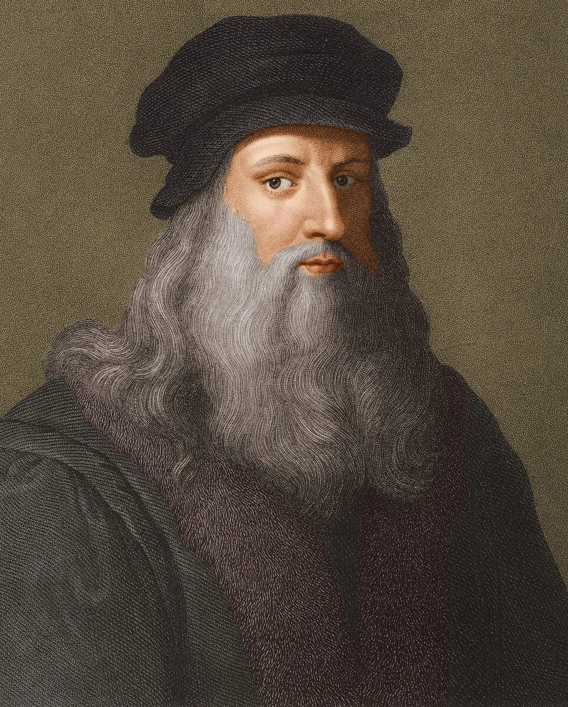
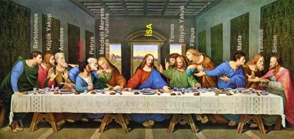

LEONARDO DI SER PIERO DA VINCI
(yardım-bilgi) (15 Nisan 1452-2 Mayıs 1519), Rönesans döneminde yaşamış İtalyan hezärfen, döneminin önemli bir filozofu, astronomu, mimari, mühendisi, mucidi, matematikçisi, anatomisti, müzisyeni. heykeltıraşı, botanisti, jeoloğu, kartografı, yazarı ve ressamıdır. En tanınmış yapıtları
Vitruvius Adamı (1490-1402).
Mona Lisa (1503-1507) ve Son Akşam Yemeğidir (1495-1497). Rönesans sanatını doruğuna ulaştırmış, yalnız sanat yapısına değil, çeşitli alanlardaki
araştırmaları ve buluşlarıyla da tanınan, dunyanın gelmiş geçmiş en büyük sanatçılarından ve dehalarından biri kabul edilmektedir.[1]

SON AKŞAM YEMEĞİ
SON AKŞAM YEMEĞI YA DA SON YEMEK (Ingilizce: The Last Supper (Di Lest Sapir).
Italyanca: Il Cenacolo (il Çenakolo) ya da L'Ultima Cena (Lultima Çena)], Hristiyan inanışına göre İsa'nın çarmıha gerilmesinden önceki akşam havarileriyle yediği son yemek. Bu yemek sırasında yaptığı konuşmanın uzunca anlatıldığı Yuhanna Kitabı'nda Isa Mesih onlara, kendisi aralarından ayrıldıktan sonra gelecek olan Paraklit le
teselli bulmalarını söyler
Son Akşam Yemeği nde Ve Havarileri Kutsal Kase den Şarap İçiyorlar Ve Ekmek Yiyorlardı
{kind=link}